Buffs
Buffs are temporary boosts or drains on the player's stats and abilities. They can be achieved by consuming various foods and drinks, or from monster attacks.
Combining Buffs
In general, buffs do not stack, but instead replace any previous buffs. More specifically, buffs from exactly one food and one drink can be active at a given time. There are some special-effect buffs that are handled separately as described below.[1] Eating a food with buffs will wipe out any buffs from previously-eaten food (but not buffs from a previous drink); one drink's buffs will replace any previous drink's buffs, but have no effect on existing food buffs. Foods or drinks that have no buffs (but restore Health and Energy) can be safely consumed without any effect on active buffs.
Only three buffs, namely Luck, Speed, and Max Energy, are available from both food and drink and can therefore be stacked:
- +1 Speed (from Coffee, Triple Shot Espresso, or Joja Cola) or +0.5 Speed (from Green Tea) can be added to the +1 Speed from a food.
- +30 Max Energy from Green Tea can be added to the +30 to +50 Max Energy from a food.
- +1 Luck from Ginger Ale can be added to the +1, +2, +3, or +5 Luck from a food.
The Chef's stall at the Desert Festival provides a wide variety of buffs, depending on the ingredients selected by the farmer. These buffs can be combined with food or drink buffs, but not with other meals from the Chef.
Special-effect and negative buffs ("debuffs") are each handled individually, independently of standard food- and drink-derived buffs: only one instance of each of these buffs can be active, and they are unaffected by other types of buffs. The special-effect buffs are "Adrenaline Rush", "Oil of Garlic", "Squid Ink Ravioli Buff", "Warrior Energy", "Monster Musk", and "Yoba's Blessing"; the negative buffs are "Burnt", "Darkness", "Frozen", "Jinxed", "Nauseated", "Slimed", "Tipsy" and "Weakness".
For example, drinking an alcoholic beverage makes the player "Tipsy". Drinking another alcoholic beverage replaces the first "Tipsy" effect with a new one (the magnitude remains -1 speed, but the duration is reset). Consuming any other drink or food (including ones with buffs) will not remove the "Tipsy" effect -- at best, +1 Speed buff (e.g., from Coffee) can be used to counteract the -1 Speed.
Buff Duration
Buff durations are specified on the wiki and in-game using real-time minutes and seconds.
Buffs will pause while the game is paused, but they will not pause otherwise even if time is paused (e.g., playing the fishing minigame in singleplayer mode will still result in any buff durations continuing even though time is paused).
Typically, 42 real-time seconds are equivalent to one game hour. (7 real-time minutes are 10 game hours.)
However, time in Skull Cavern runs more slowly: one game hour lasts 54 real-time seconds. (Except in multiplayer games and on Prehistoric Floors, which revert to 42-second hours). So one cup of Coffee, that normally would last for two hours, will only last for one and a half hours in the Skull Cavern.
All buffs are cleared once the player sleeps.
Preventing Negative Buffs
The higher the player's Immunity, the greater the chance to avoid negative buffs (known as debuffs) from enemies. Both Squid Ink Ravioli and the Basilisk Paw always prevent debuffs from enemies. All three of these sources do not prevent the Tipsy effect. The Slime Charmer Ring prevents the Slimed effect from being applied. The Sturdy Ring halves the duration of negative effects that are applied to the player.
Available Buffs
| Image[2] | Name | Effect | Cause | Duration[3] |
|---|---|---|---|---|
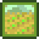 |
Farming Buff | Alters hoe and watering can proficiency by an amount dependent on what was consumed. Also has an effect on the quality of crops when harvesting. |
Consuming various food. | Varies |
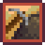 |
Mining Buff | Alters pickaxe proficiency by an amount dependent on what was consumed. | Consuming various food. Selecting certain ingredients at the Chef. |
Varies |
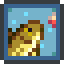 |
Fishing Buff | Alters fishing rod proficiency by an amount dependent on what was consumed. Also has an effect on the time it takes for a fish to bite, the spawn rate of most fish[4], and the size of the green bar. |
Consuming various food. Selecting certain ingredients at the Chef. |
Varies |
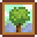 |
Foraging Buff | Alters axe proficiency by an amount dependent on what was consumed. Also has an effect on the number of drops when shaking berry bushes. |
Consuming various food. | Varies |
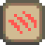 |
Attack Buff | Alters |
Consuming various food. Selecting certain ingredients at the Chef. |
Varies |
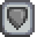 |
Defense Buff | Alters |
Consuming various food. Selecting certain ingredients at the Chef. |
Varies |
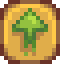 |
Max Energy Buff | Increases the player's |
Consuming various food or Green Tea | Varies |
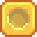 |
Luck Buff | Increases |
Consuming various food or Ginger Ale. Selecting certain ingredients at the Chef. |
Varies |
| Magnetic Radius Buff | Alters |
Consuming various food | Varies | |
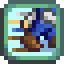 |
Speed Buff | Increases |
Consuming various food or drink (Coffee, Espresso, Joja Cola, or Green Tea). Selecting certain ingredients at the Chef. |
Varies |
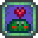 |
Monster Musk Buff | Your scent makes you irresistible to monsters Doubles the enemies encountered. |
Consuming Monster Musk | |
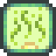 |
Oil of Garlic Buff | Your skin exudes a pungent aroma Prevents infested floors, swarms, and, in the Mines, all enemies. Does not work in the Dangerous Mines or the Skull Cavern. |
Consuming Oil of Garlic | |
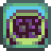 |
Squid Ink Ravioli Buff | You are immune to debuffs | Consuming Squid Ink Ravioli | |
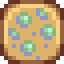 |
Tipsy | Consuming alcohol (Beer, Mead, Pale Ale, or Wine) | ||
| Adrenaline Rush | Killing an enemy while wearing a Savage Ring | |||
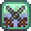 |
Warrior Energy | Killing an enemy while wearing a Warrior Ring | ||
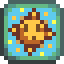 |
Yoba's Blessing | Invincibility | Being hit by an enemy while wearing a Ring of Yoba | |
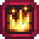 |
Burnt | Being hit by a Magma Sparker | ||
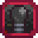 |
Darkness | Darkness clouds your vision, making it difficult to see Makes the screen go almost completely dark. |
Being hit by a Shadow Sniper | |
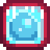 |
Frozen | Being hit by a Skeleton Mage | ||
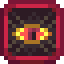 |
Jinxed | Being hit by a Shadow Shaman's fireball | ||
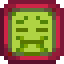 |
Nauseated | Urgh... You're too sick to eat anything Also applies to drinks. This can be cured by eating Ginger or drinking Ginger Ale. |
Being hit by a Putrid Ghost | |

|
Slimed | Being hit by a Slime | ||
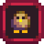 |
Weakness | Being hit by a Blue Squid's orb |
References
- ↑ See BuffsDisplay::tryToAddFoodBuff and BuffsDisplay::tryToAddDrinkBuff in the game code.
- ↑ See Content\TilesSheets\BuffsIcons.xnb in the game files.
- ↑ See Buff::Buff in the game code and corresponding indexes at the beginning of the same file.
- ↑ See GameLocation::CheckGenericFishRequirements in the game code.
History
- Sometime between v1.11 and v1.3, a bug was removed that caused the duration of buffs to decrease as the day progressed.
- 1.5: Added Burnt, Darkness, Frozen, Nauseated, Weakness, Monster Musk, and Squid Ink Ravioli Buffs. The buff indicator now blinks before expiring.
- 1.6: Added Basilisk Paw, which prevents negative buffs. Joja Cola and Green Tea now give speed buffs. Inventory tooltips for food that gives a buff now shows the buff duration in the tooltip. Fixed a range of bugs like attribute drift and double-debuff. Fixed food/drink buffs discarded if they have a balanced total of effects (e.g. +2 attack and -2 speed). Fixed negative custom buffs shown with a double-negative (e.g. "--2 speed"). Fixed Squid Ink Ravioli buff not remaining active if another food buff is added later (although the buff icon was still shown). Fixed Squid Ink Ravioli not resetting the buff duration when the player eats another one, unlike other food buffs. Fixed Burnt not showing the -3 Attack effect.
| Skills & Stats | |
|---|---|
| Skills | Farming • Mining • Foraging • Fishing • Combat |
| Stats | Attack • Crit. Chance • Crit. Power • Defense • Immunity • Luck • Magnetism • Speed • Weight |